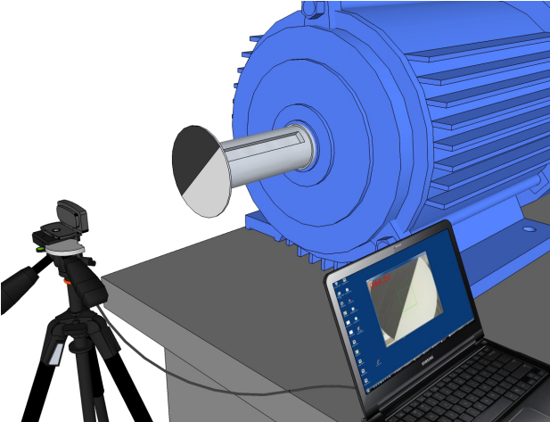

A system for measuring the instantanious rotor angular position for electric motor testing.
Video Rotary Encoder Real-time angular shaft position of the DUT is measured using a low-cost USB video camera mounted on a tripod and a target disk mounted on the motor shaft. Software measures the angle of the boundary between the dark and light areas of the target disk and provides this data directly to the test software. Total hardware cost is less than $75. The camera interfaces directly to any PC. Accuracy is very high at the normal rotation speeds used for single-phase rotation testing.
There are two versions of this project. The original was written in Java. The latest version is written in Python3 for easier initial setup and maintenance. The final functionality will be the same.
The Python version is a work in progress.
06 May 2023